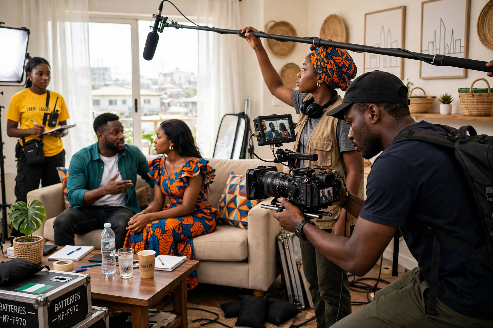

| Nollywood | |
|---|---|
| Location | Lagos and Asaba, Nigeria |
| Languages | English, Yoruba, Hausa, Igbo and others |
| Origin of name | Blend of "Nigeria" and "Hollywood" (popularised c. 2002) |
| Key precursor | Living in Bondage (1992) |
| Output | Roughly 2,500 films per year |
Nollywood, a portmanteau of Nigeria and Hollywood, is a sobriquet that originally referred to the Nigerian film industry. The industry is one of the largest film producers in the world by volume, releasing around 2,500 films a year, and its movies are watched across Africa and the African diaspora.
Nigerian cinema has roots in colonial-era filmmaking and the vibrant Yoruba travelling theatre tradition. The direct-to-video era began with Kenneth Nnebue's Living in Bondage (1992), an Igbo-language drama shot on VHS and sold in electronics markets; its success demonstrated a mass market for low-budget video films. Production centred on the Idumota and Surulere districts of Lagos and later Asaba, with films typically shot in days on small budgets and sold as VCDs and DVDs through informal distribution networks.
A "New Nollywood" of higher-budget cinema releases emerged in the 2000s and 2010s with directors such as Kunle Afolayan (The Figurine, October 1) and films like The Wedding Party (2016), which broke Nigerian box-office records. Streaming platforms including Netflix and Amazon commissioned Nigerian originals in the 2020s, while debates continue over piracy, working conditions, and the term "Nollywood" itself.
Nollywood films commonly explore family conflict, wealth and occult practices, religion, romance, and urban migration, in English and Nigeria's major languages. UNESCO's 2009 survey ranked Nigeria second only to India in number of films produced — ahead of the United States.